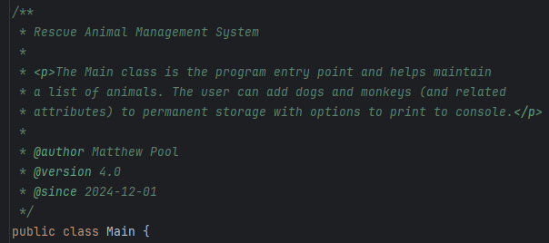
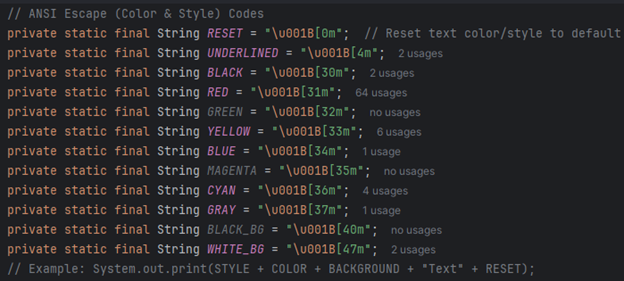
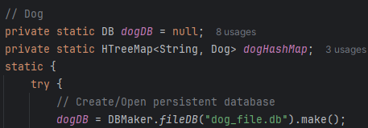
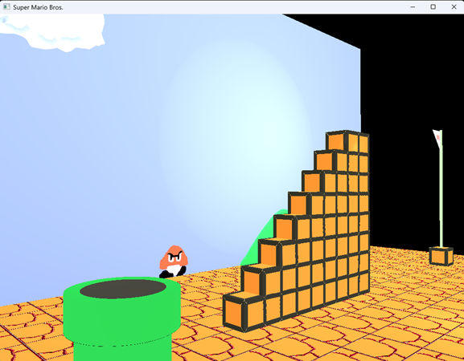
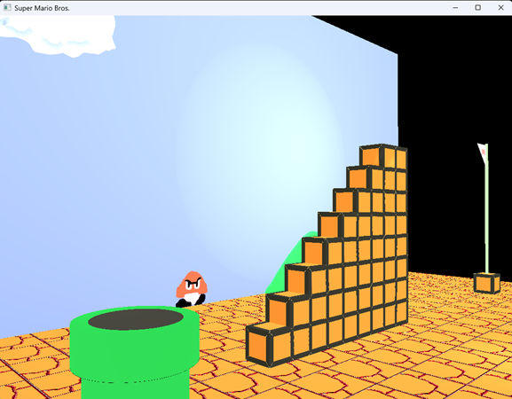
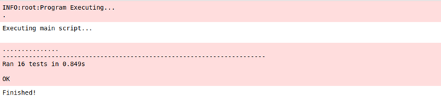
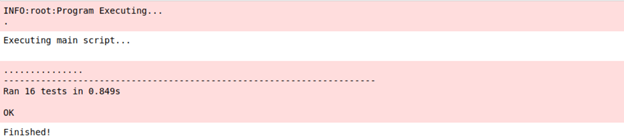

At age five, I fell in love with Super Mario Bros. on Nintendo (NES) and almost immediately wanted to be a programmer.
As the first in my family to earn a four-year degree, I ended up completing my B.S. in Computer Science with a 3.9 GPA.
Throughout my software development journey, I gained experience in things like:
graphics and low-level programming with C/C++
fullstack web (and cloud) development with HTML, CSS, JavaScript, and TypeScript
mobile and backend development with Java
machine learning with Python and Jupyter
fullstack mobile app engineering with Kotlin
I recently designed and engineered a video-streaming Android app (currently on a Google Play Store test track) named "Flick", which is what the little cute birdie wanted to show you.
I can provide technical expertise, clear communication, and a positive attitude every day.
Whether designing a graphical interface or engineering a complex piece of software, I have a passion for excellence and always give 100% at anything I do. And I'm ready to see what's next!
Flick (Android)
Engineer: Matthew Pool
Synopsis
Flick is a vertical video app similar in style to TikTok but with an added feature: a single sideways swipe reveals videos with significant similarity to the current video you are watching.
Visual and auditory feedback educates users on app functionality and navigation, ensuring an optimal experience on the first launch.
Users interact via fire (like) and poop (dislike) icons, with video ID, view duration, and preference data uploaded to Firestore.
The user can use basic gestures to increase playback speed or pause and unpause the video.
After an initial warmup period, the vertical feed operates on an intelligent cycle that prioritizes serving videos predicted to generate the highest engagement from that user.
The recommendation engine tokenizes Archive.org metadata and employs cosine similarity calculations weighted by view time and like/dislike ratios.
Random content is interspersed to facilitate content discovery beyond this algorithm.
The app prebuffers two upcoming videos by default, reducing to one when a qualified similar video exists at the current index and needs to be preloaded.
A history index tracks the last viewed video, enabling users to instantaneously recover from accidental swipes.
From an Android device,
tap the Google Play image below
Sign in (if needed)
Tap Join
Tap Join Group
Tap the Google Play link in the group post
Tap Install
The Existence Paradox (TS/React)
This app is a fun little philosophical and scientific exploration of the Origin of Existence.
The information in this app should not be taken as fact and simply represents a thought experiment I did, as i am still learning myself.
Give it a go if it sounds interesting to you, and be sure to check out my other projects below!
In this project, I recreated a classic scene from Nintendo's original Super Mario Bros. using OpenGL, GLFW, GLSL, and GLM.
I created a Phong lighting model with multiple light sources and optimized the rendering pipeline using VAO/VBO/EBO buffers.
I hardcoded all objects and (aside from the cylinder) all shapes. I customized shaders and created all meshes and textures.
Then, I positioned and scaled these resources in 3D space and integrated navigation with the option to switch between an orthogonal view and a standard perspective view.
InventoryBuddy allows users to build and maintain a personal digital inventory of items.
The user can (optionally) enable SMS notifications to receive warnings when any of their items are running low.
I ensured that I used industry-standard contrast ratios and culturally-neutral color combinations to aid in accessibility and provide a more positive and inclusive user experience for anyone who tries the app.
This project utilized a Model-View-Controller (MVC) design pattern and used a (Dash) dashboard, MongoDB database, and Pandas for data manipulation.
The dashboard is designed to interact with the Austin Animal Center (AAC) "animals" collection, which holds basic information about the cats and dogs that the AAC currently houses.
This dashboard integrates with the MonogDB CRUD module I created, which abstracts away the tedious nature of connecting to a MongoDB database and executing basic CRUD (Create, Read, Update, Delete) operations. Unit testing was implemented using pytest.
The user can create new documents and insert them into the "animals" collection, view documents in the database by using custom query filters, or use matching queries to update and delete documents.
Check out my 10 minute slideshow presentation video below to learn about cloud services and serverless functions with Amazon Web Services (AWS).
Travel Website Demo (HTML/CSS/TS)
The admin site and customer-facing site were created using the MVC (Model-View-Controller) architecture and the MEAN (Mongo-Express-Angular-Node.js) stack, along with Bootstrap CSS and Handlebars. API endpoints were tested using Postman.
The admin can add or edit various vacation packages from a single-page application (SPA), and the customer may view various packages and meals or read the latest blog posts on the site.
As part of an experiential learning opportunity I took advantage of, I was able to receive this certificate for data analytics from uCertify.
Data Analysis Script (Python)
As part of my experience, I created a Python script that plots global temperature deviations, using a dataset from NASA. I utilized the Python libraries numpy, pandas, and matplotlib to do this. The output to this script may be seen below. This is a real-world example of using technology to interact with and understand data. I will use this experience in my future software development projects to integrate data analytics and machine learning into my software applications. Because without data, there is no app.
Working with a Deep Neural Network (DNN) model, I experimented with various hyperparameter values to find the optimal settings for image detection before reaching the point of diminishing returns in terms of image recognition accuracy versus the amount of time and training data needed.
I also had the experience of optimizing a Deep Q-Learning (DQN) model for a gaming AI agent whose goal was to find the optimized path to its target. The report can be downloaded below.
I created the following report after studying and analyzing historical NBA Elo (relative skill level) data to predict the number of NBA regular-season wins, based on average points and average Elo of the teams. The results can be seen in the report below the following images.
This school project required students to choose a piece of software that they wrote at the beginning of the computer science program and improve it.
I chose an old Java command-line program that I made in one of my first computer science class I had taken. I picked it because it looked like it could use a little help (to put it lightly).
This is a brief summary of the changes implemented in this poor, HOPELESS application.
None taken. No offense, "Past Me".
But wait! Is there yet a shimmer of hope remaining after all...
Project Details
This is a text-based program that keeps track of certain rescue animals.
The user can add new animals using their names and other attributes but only to temporary storage.
The user can also print out a list of dogs, monkeys, or all non-reserved animals.
I decided to implement input validation, error-checking, and JUnit testing, as well as JavaDocs and other basic refactoring.
I created a more user-friendly interface by customizing the text colors and styles and adding ANSI escape codes to make headers so that the program is more visually appealing with clearer separation of the displayed elements.
I've improved both the overall user experience and the robustness of the program.
Added JavaDocs

Added Error-Handling and Input Validation:
Converted to Maven Framework:
Implemented JUnit Testing:
Added Custom Text Colors and Styles:

Database Enhancements
I knew this program could really benefit from database implementation. This would allow saving records to persistent storage, instead of temporary memory that is lost when program execution terminates. To start, I created a database for dogs and a database for monkeys using hash maps with MapDB. I used the animal name as the key and the animal instance as the value. Any time the user adds an animal, the animal is added to both temporary memory and persistent storage.
At initial program execution, the records in permanent storage are loaded into the in-program data structures to ensure fast access and efficiency. Now, the animal data persists across program executions, and the program finally provides the user with real-world functionality. Hooray!
Added Persistent Storage:

Algorithmic Efficiency Enhancements
In terms of algorithmic efficiency and optimization, this program could use some minor tweaking. I ended up converting my main lists (dogList and monkeyList) from an ArrayList data type to a LinkedHashMap type. A LinkedHashMap uses key-value pairs and a doubly-linked list, which brings the worst-case time complexity down from O(n) to O(log n), where n is the number of animals in the list or map. In my new maps, I used the animal names as the keys and the associated animal instances as the values. I ended up using the entrySet method on the hash maps (dogMap and monkeyMap) to iterate through the values of each.
I also took advantage of the forEach method with a lambda expression to easily print out various instance values.
Optimized from O(n) down to O(log n) worst-case time complexity:


 



 
